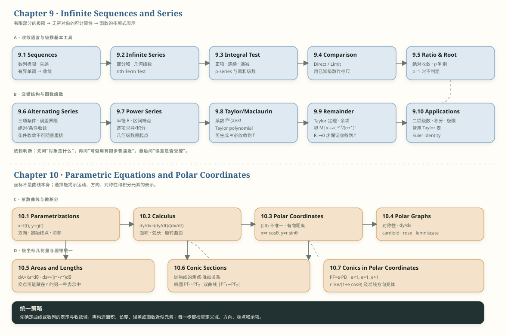

第 9 章：给无穷下定义
从数列极限开始，经部分和、收敛判别、幂级数和 Taylor 余项，最终把复杂函数变成可控制误差的多项式。
第 9 章用有限部分和与受控余项处理“无穷”；第 10 章用参数和极坐标改写曲线、方向、面积与长度。两章共同训练同一件事：先确认对象与定义域，再决定何时可以把有限近似安全地推向极限。
00 · Batch Brief
从数列极限开始，经部分和、收敛判别、幂级数和 Taylor 余项，最终把复杂函数变成可控制误差的多项式。
把曲线视为参数运动，再用极坐标与离心率统一描述圆、抛物线、椭圆和双曲线。
逐项核验收敛条件、端点、绝对与条件收敛、参数方向、极坐标表示不唯一、面积扇区与余项误差。
01 · Dependency Map

数列极限定义部分和的极限；判别法对级数分型；幂级数把函数变成无穷多项式；Taylor 定理再用余项判断这种表示是否真的收敛到原函数。
参数提供“如何走完整条曲线”的信息；参数斜率、弧长与面积来自链式法则和定积分；极坐标则用角与径向距离重写同一批几何量。
flowchart TB A["9.1 Sequences"] --> B["9.2 Infinite Series"] B --> C["9.3 Integral Test"] C --> D["9.4 Comparison Tests"] D --> E["9.5 Absolute Convergence; Ratio/Root"] E --> F["9.6 Alternating Series"] F --> G["9.7 Power Series"] G --> H["9.8 Taylor/Maclaurin"] H --> I["9.9 Taylor Remainder"] I --> J["9.10 Applications"] K["10.1 Parametrizations"] --> L["10.2 Parametric Calculus"] K --> M["10.3 Polar Coordinates"] M --> N["10.4 Polar Graphs"] N --> O["10.5 Polar Areas and Lengths"] M --> P["10.6 Conic Sections"] P --> Q["10.7 Polar Conics"]
02 · English Terminology
重点区分 sequence 与 series、convergence 与 absolute convergence、parameter 与 coordinate、eccentricity 与 radius，以及 polar equation 中同一个几何点的无穷多种表示。
| English term | 中文译名 | 简明定义 | 对应节 | 关键公式 / 提示 |
|---|
| 易混项 | 关键区别 | 核对问题 |
|---|---|---|
| sequence / series | 前者是有顺序的列表，后者由部分和定义。 | 你讨论的是 aₙ 还是 sₙ？ |
| convergent / absolutely convergent | 绝对收敛必收敛；收敛不一定绝对收敛。 | Σ|aₙ| 是否也收敛？ |
| ρ=1 / convergence | 比值或根值判别在 ρ=1 时没有结论。 | 是否需要改用 p 级数、比较或积分判别？ |
| Taylor series / Taylor polynomial | 前者是无穷级数，后者是截断后的有限多项式。 | 最终是否需要余项控制误差？ |
| parameter / coordinate | t 控制运动过程；x、y 或 r、θ 描述位置。 | 问题在问方向、轨迹，还是几何量？ |
| r / dr/dθ | r 是径向距离；极坐标曲线斜率 dy/dx 不等于 dr/dθ。 | 需要笛卡尔斜率还是径向变化率？ |
| circle / since e=0 ellipse | 圆是离心率为 0 的椭圆退化特例。 | 标准式中 a=b 吗？ |
| polar r=k / circle | r=k 是圆心在极点、半径 |k| 的圆。 | 常数的是 r，还是直角坐标 x 或 y？ |
New Chapter Summary
用极限给无穷加法赋予意义；用判别法判断收敛；用幂级数与 Taylor 级数把函数变成可估计误差的无穷多项式。
数列是按整数指标排列的有序对象，极限仍用 ε 语言定义。数列极限可沿用和、差、积、商与夹逼定理；若 aₙ=f(n)，还可把 n 连续化后使用 L'Hôpital。有界本身不够，但“有界 + 单调”足以保证收敛。
N 只需对每个 ε 找到一次，之后所有项都进入 L 的 ε 邻域。
非减且上有界，或非增且下有界。
无穷级数不是直接完成无穷次加法，而是研究部分和 sₙ 的极限。几何级数和裂项级数能显式求部分和；其他级数常只能判敛散。第 n 项趋于 0 是收敛的必要条件，却绝不能单独证明收敛。
先识别首项与公比；|r|≥1 时发散。
只用于发散；aₙ→0 时测试无结论，例如调和级数。
非负项级数的部分和单调增加，因此只要证明上有界即可。积分判别把离散矩形面积与曲线下面积比较；p 级数是最常用的基准。判别法只回答敛散，不保证级数和等于对应积分。
f 必须在 [N,∞) 上连续、正、递减，且 aₙ=f(n)。
p=1 是调和级数；p 略大于 1 即收敛。
比较法的关键不是机械套不等式，而是找“大 n 时起主导作用的项”。直接比较要求逐项不等式；极限比较用 aₙ/bₙ 的极限，更适合有理式、根式和含对数项。
参与比较的首项之后必须非负；常数倍和有限项不影响敛散。
含负项的级数先测试绝对值级数；绝对收敛能推出收敛，并允许重排。比值判别适合阶乘与幂；根值判别适合整个第 n 项带 n 次幂的结构。两者在 ρ=1 时都必须换方法。
计算相邻项绝对值之比，极限可为 ∞；ρ=1 不判定。
计算 |aₙ| 的 n 次方根，判定边界与比值判别相同。
交错级数判别法要求 uₙ 正、最终非增并趋于 0；它比一般收敛判别多一个可计算误差的优势。若原级数收敛而绝对值级数发散，则为条件收敛；条件收敛级数不能任意重排。
必须先用 Alternating Series Test 确认三条件；误差上界是第一个未使用项，不是任意余项。
Σ|aₙ| 收敛；原级数收敛且可安全重排。
Σaₙ 收敛但 Σ|aₙ| 发散；项的顺序是答案的一部分。
幂级数在中心两侧的收敛性由半径控制，端点必须单独测试。收敛区间内部可逐项加、减、乘、代换、求导和积分；这些操作是后续生成新 Taylor 级数的核心工具。
cₙ 是系数，a 是中心；同一函数在给定中心若有幂级数表示，则系数唯一。
R 可为 0、有限正数或 ∞；端点行为不受半径本身决定。
代换、求导和积分后都要重新检查新级数的有效区间。
Taylor 系数由函数在中心的各阶导数唯一确定；截断后得到 Taylor 多项式。一个函数即使任意阶可导，它生成的 Taylor 级数也未必在邻域内等于函数本身，因此第 9.9 节必须研究余项。
中心 a=0 时称为 Maclaurin 级数；第 n 阶 Taylor 多项式的实际次数可能低于 n。
| 函数 | Maclaurin 展开 | 关键结论 |
|---|---|---|
| eˣ | Σxⁿ/n! | 系数全为 1/n! |
| cos x | Σ(-1)ⁿx²ⁿ/(2n)! | 偶函数，只出现偶次幂 |
| 1/x 在 a=2 | 几何级数 | 展开区间 0<x<4 |
Taylor 定理把函数拆成“Taylor 多项式 + 余项”。要证明级数收敛到函数，必须证明 Rₙ(x)→0，而不是只证明级数本身收敛。余项估计定理用 (n+1) 阶导数的统一上界 M 控制误差。
c 依赖于 x 和 n，只知道它位于 a 与 x 之间。
若无法统一界定高阶导数，就不能直接使用该误差界。
eˣ、sin x、cos x 的展开对所有实数有效；代换时新变量可取任意实数。
Taylor 级数可用于二项式近似、非初等积分、未定式极限和复指数定义。复杂函数先匹配已知展开，再做乘法、除法、代换或积分，通常比逐阶直接求导更稳健。
(1+x)^m 在 |x|<1 内可展开；m 为非负整数时会在有限项终止。
先展开被积函数，再逐项积分；用交错估计或余项界定截断误差。
把函数展到分子首次不抵消的阶数，再除以主项，避免反复 L'Hôpital。
e^{iθ}=cosθ+i sinθ；它定义复指数并连接五类基本常数。
| 教材例题 / 定理 | 结论 | 位置 |
|---|---|---|
| Example 8（9.1） | ((n+1)/(n−1))ⁿ→e²，展示取对数与连续化。 | 教材 p.536 / PDF p.537 |
| Example 3（9.2） | 弹跳球总路程可写成几何级数，示例 a=6、r=2/3 时为 30 m。 | 教材 p.546 / PDF p.547 |
| Example 5（9.2） | Σ1/[n(n+1)] 裂项相消，和为 1。 | 教材 p.546–547 / PDF p.547–548 |
| Theorem 9（9.3） | 连续、正、递减函数连接级数与反常积分敛散。 | 教材 p.554 / PDF p.555 |
| Theorem 11（9.4） | 极限比较的 c∈(0,∞)、c=0、c=∞ 三种情形。 | 教材 p.561 / PDF p.562 |
| Theorem 13–14（9.5） | 比值与根值判别决定绝对收敛，ρ=1 时失效。 | 教材 p.566–568 / PDF p.567–569 |
| Theorem 15–16（9.6） | 交错级数判别及误差小于首个未使用项。 | 教材 p.571–573 / PDF p.572–574 |
| Example 3（9.7） | 幂级数内部由比值判定，端点需另行测试。 | 教材 p.579 / PDF p.580 |
| Examples 2–4（9.8） | eˣ、cos x 的 Maclaurin 级数；平坦函数说明“可生成”不等于“可表示”。 | 教材 p.591–593 / PDF p.592–594 |
| Theorems 23–24（9.9） | Taylor 定理与余项估计是证明收敛到原函数的工具。 | 教材 p.594–595 / PDF p.595–596 |
| Examples 3–4（9.10） | sin x² 的积分可用级数估计，并以第二项后的下一项控制误差。 | 教材 p.603–604 / PDF p.604–605 |
nth-Term Test 只能证明发散；调和级数是反例。
函数必须正、连续并最终递减。
比值和根值判别在 ρ=1 时都必须换方法。
只有绝对收敛级数能任意改变项的顺序。
开区间内部相同，端点可能一端收敛、一端发散。
必须证明余项趋零；无限可导本身不够。
New Chapter Summary
把曲线看作运动轨迹，或用径向距离与角度重写位置；再用参数和极坐标公式计算斜率、面积、长度及圆锥曲线。
参数方程同时描述“曲线在哪里”和“参数增加时如何运动”。同一轨迹可以有不同参数化；消去参数只得到几何关系，可能丢失初始点、终点、遍历次数或方向。
x=a cos t，y=a sin t，0≤t≤2π，逆时针描一次。
过 (a,b)、斜率 m：x=a+t，y=b+mt。
x=a(t−sin t)，y=a(1−cos t)，表示半径 a 的轮沿直线滚动时圆周点的轨迹。
给出参数区间后，先判断 t 增加时 x、y 如何变化，再画箭头。
参数曲线把 dx、dy 都看成 t 的函数。斜率由链式法则给出；二阶导数必须“先对 t 求一阶斜率，再除 dx/dt”，不能把 d²y/dt² 直接除以 d²x/dt²。弧长元素满足 ds²=dx²+dy²。
要求相关导数存在且 dx/dt≠0。
先求 dy/dx 作为 t 的函数，再对 t 求导，最后除以 dx/dt。
f′、g′ 连续、不同时为零，且曲线在区间内恰好描过一次。
绕 x 轴需 y≥0，绕 y 轴需 x≥0；半径随 t 变化。
极坐标用 (r,θ) 描述点，其中 r 是有向距离。加上 2πn 可回到同一射线，改变 r 的符号并加/减 π 也可得到同一点；因此交点、区域边界和对称性必须结合图形与等价表示。
原点处 r=0 而 θ 任意；tanθ=y/x 时需要根据象限和负 r 修正角。
| 极坐标方程 | 笛卡尔解释 | 提醒 |
|---|---|---|
| r=a | 圆心在极点、半径 |a| 的圆 | 同一个圆也可写 r=-a |
| θ=θ₀ | 过极点的直线 | θ₀ 与 θ₀+π 生成同一直线 |
| r=2a cosθ | x²+y²=2ax | 圆心在 (a,0)，过极点 |
| r=2a sinθ | x²+y²=2ay | 圆心在 (0,a)，过极点 |
极坐标作图先找允许的 θ、r 的正负与周期，再检查关于坐标轴或极点的对称性。dy/dx 是笛卡尔平面中的切线斜率，不是 dr/dθ；曲线经过极点时可能有多个入场角与多个切线。
要求 dx/dθ≠0；若分子分母同为零，需用图形或极限单独判断。
若 θ→−θ 保持图形，可利用上半部分镜像。
检查 (r,θ) 与 (r,π−θ) 或等价表示。
检查 (r,θ) 与 (−r,θ) 或 (r,θ+π)。
cardioid、limaçon、rose、lemniscate；图形名称记录形状，不替代定义域检查。
极坐标中的薄面积元素是扇形 ½r²dθ，而不是矩形 r dθ；弧长则由 θ 参数化后使用参数弧长公式。面积公式要求 r≥0 且扫过区间不超过一周，否则要分段或修正负面积。
曲线间面积用外侧半径平方减内侧半径平方；先画图确定交角。
r(θ) 需有连续一阶导数；参数区间内曲线恰好描过一次。
圆锥曲线的几何定义决定其标准方程：抛物线到焦点与准线等距；椭圆到两焦点距离和为常数；双曲线到两焦点距离绝对差为常数。配方后可读取中心、轴、焦点、顶点和渐近线。
| 曲线 | 标准形式 | 关键关系 |
|---|---|---|
| 抛物线 | y²=4px 或 x²=4py | 焦点到顶点距离 |p|；准线与焦点分居顶点两侧 |
| 椭圆 | x²/a²+y²/b²=1，a>b | c²=a²−b²；焦点在较长轴 |
| 双曲线 | x²/a²−y²/b²=1 | c²=a²+b²；渐近线 y=±(b/a)x |
焦点与准线关系 PF=e·PD 用一个离心率统一三类圆锥曲线：e<1 为椭圆，e=1 为抛物线，e>1 为双曲线。把焦点放到极点后，只需根据准线在哪个方向选择 cosθ、sinθ 及分母正负。
此式对应 x=k>0；准线在左侧时用 1−e cosθ，水平准线则改用 sinθ。
| 教材例题 | 结论 | 位置 |
|---|---|---|
| Example 8（10.1） | 摆线参数式 x=a(t−sin t)，y=a(1−cos t)。 | 教材 p.620 / PDF p.621 |
| Example 1（10.2） | x=sec t，y=tan t 在 t=π/4 的切线斜率 2。 | 教材 p.625–626 / PDF p.626–627 |
| Example 3（10.2） | 星形线 x=cos³t，y=sin³t 围成面积 3π/8。 | 教材 p.626–627 / PDF p.627–628 |
| Example 5–9（10.2） | 星形线弧长 6；参数曲线旋转曲面面积可由 2π半径·ds 建立。 | 教材 p.628–632 / PDF p.629–633 |
| Example 5–6（10.3） | 圆 x²+(y−3)²=9 的极坐标式 r=6sinθ；极坐标/笛卡尔方程互化。 | 教材 p.636–637 / PDF p.637–638 |
| Examples 1–2（10.4） | 心形线与双纽线的对称性和斜率需结合等价表示。 | 教材 p.640 / PDF p.641 |
| Examples 1–4（10.5） | r=2(1+cosθ) 的面积 6π；r=1−cosθ 的弧长 8。 | 教材 p.643–645 / PDF p.644–646 |
| Examples 1–3（10.6） | y²=10x、x²/16+y²/9=1、x²/4−y²/5=1 的焦点与准线/渐近线。 | 教材 p.648–651 / PDF p.649–652 |
| Examples 3–4（10.7） | r=6/(2+3cosθ) 为双曲线；r=25/(10+10cosθ) 的准线为 x=5/2。 | 教材 p.658 / PDF p.659 |
同一笛卡尔方程可能只描述其中一段，方向和起点也会丢失。
要先把 dy/dx 写成 t 的函数，再按公式求导。
几何斜率仍是 dy/dx，需要参数公式。
薄面积元素是 ½r²dθ，最小扇形的面积并非 r dθ。
负 r 与 2π 平移可能给出同一几何点的另一表示。
e=1 是抛物线；椭圆 e<1，双曲线 e>1。
05 · Deliberate Practice
题目按章节与知识点映射。先独立作答，再依次展开提示、关键步骤和完整解析；同一道题若涉及条件或方向，解析中会明确写出适用范围。
06 · Recall & Diagnosis
| 练习编号 / 知识点 | 错误类型 | 应回看的内容 |
|---|---|---|
尚未编辑
07 · Quality Gate
| 检查项 | 结果 | 证据 / 说明 | 缺陷等级 |
|---|---|---|---|
| G1 版本与来源 | 通过 | 第9章530–609、第10章616–660与PDF物理页逐节核对。 | 无 |
| G2 章节覆盖 | 通过 | 9.1–9.10、10.1–10.7全部覆盖。 | 无 |
| G3 术语 | 通过 | 60个新增术语，按章节和字母检索。 | 无 |
| G4 定理与公式 | 通过 | 收敛判别、Taylor余项、参数/极坐标积分与圆锥曲线条件。 | 无 |
| G5 例题结论 | 通过 | 两章代表例题均有教材页/PDF页锚点。 | 无 |
| G6 练习与答案 | 通过 | 每章15道原创题，五种题型、三级答案。 | 无 |
| G7 计算与渲染 | 通过 | 52项代表性复算通过；26个页面公式无溢出，KaTeX错误为0。 | 无 |
| G8 图表与链接 | 通过 | 知识图、章节导航、术语和练习检索可用；本地链接完整。 | 无 |
| G9 网页与打印 | 通过 | 桌面、390px移动端无页面级溢出；A4 PDF逐页检查。 | 无 |
| G10 版权与版本 | 通过 | 原创提炼与练习，不复制整节教材或混入其他资料。 | 无 |
08 · Source Ledger
| 节 | 教材页 | PDF物理页 | 内部标题 |
|---|---|---|---|
| 9.1 | 530–542 | 531–543 | 数列、极限与单调收敛 |
| 9.2 | 543–552 | 544–553 | 无穷级数、几何级数与部分和 |
| 9.3 | 553–558 | 554–559 | 积分判别与p级数 |
| 9.4 | 559–563 | 560–564 | 直接比较与极限比较 |
| 9.5 | 564–570 | 565–571 | 绝对收敛、比值与根值 |
| 9.6 | 571–577 | 572–578 | 交错级数与条件收敛 |
| 9.7 | 578–588 | 579–589 | 幂级数及其运算 |
| 9.8 | 589–593 | 590–594 | Taylor/Maclaurin 级数与多项式 |
| 9.9 | 594–600 | 595–601 | Taylor 定理、余项与收敛 |
| 9.10 | 601–609 | 602–610 | Taylor 级数的应用 |
| 10.1 | 616–624 | 617–625 | 平面曲线的参数化 |
| 10.2 | 625–633 | 626–634 | 参数曲线的微积分 |
| 10.3 | 634–637 | 635–638 | 极坐标 |
| 10.4 | 638–641 | 639–642 | 极坐标方程作图 |
| 10.5 | 642–646 | 643–647 | 极坐标面积与长度 |
| 10.6 | 647–654 | 648–655 | 圆锥曲线 |
| 10.7 | 655–660 | 656–661 | 极坐标中的圆锥曲线 |